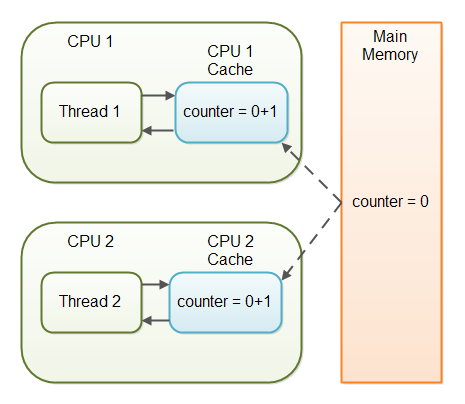

Volatile
Use volatile keyword to guarantee threads read variable value directly from main memory.
Volatile keyword
The Java volatile keyword is used to mark a Java variable as being stored in main memory. More precisely that means, that every read of a volatile variable will be read from the computer's main memory, and not from the CPU cache, and that every write to a volatile variable will be written to main memory, and not just to the CPU cache.
Actually, since Java 5 the volatile keyword guarantees more than just that volatile variables are written to and read from main memory.
Variable Visibility Problems
The Java volatile keyword guarantees visibility of changes to variables across threads. In a multithreaded application where the threads operate on non-volatile variables, each thread may copy variables from main memory into a CPU cache while working on them, for performance reasons. If the computer contains more than one CPU, each thread may run on a different CPU. That means, each thread may copy the variables into the CPU cache of different CPUs. This is illustrated here:
 Threads may hold copies of variables from main memory in CPU caches.
With non-volatile variables there are no guarantees about when the Java Virtual Machine (JVM) reads data from main memory into CPU caches, or writes data from CPU caches to main memory. This can cause several problems.
Threads may hold copies of variables from main memory in CPU caches.
With non-volatile variables there are no guarantees about when the Java Virtual Machine (JVM) reads data from main memory into CPU caches, or writes data from CPU caches to main memory. This can cause several problems.
Imagine a situation in which two or more threads have access to a shared object which contains a counter variable declared like this:
Imagine too, that only Thread 1 increments the counter variable, but both Thread 1 and Thread 2 may read the counter variable from time to time.
If the counter variable is not declared volatile there is no guarantee about when the value of the counter variable is written from the CPU cache back to main memory. This means, that the counter variable value in the CPU cache may not be the same as in main memory. This situation is illustrated here:
 The CPU cache used by Thread 1 and main memory contains different values for the counter variable.
The problem with threads not seeing the latest value of a variable because it has not yet been written back to main memory by another thread, is called a
The CPU cache used by Thread 1 and main memory contains different values for the counter variable.
The problem with threads not seeing the latest value of a variable because it has not yet been written back to main memory by another thread, is called a visibility problem. The updates of one thread are not visible to other threads.
The Java volatile Visibility Guarantee
The Java volatile keyword is intended to address variable visibility problems. By declaring the counter variable volatile all writes to the counter variable will be written back to main memory immediately. Also, all reads of the counter variable will be read directly from main memory.
Here is how the volatile declaration of the counter variable looks:
Declaring a variable volatile thus guarantees the visibility for other threads of writes to that variable.
In the scenario given above, where one thread (T1) modifies the counter, and another thread (T2) reads the counter (but never modifies it), declaring the counter variable volatile is enough to guarantee visibility for T2 of writes to the counter variable.
If, however, both T1 and T2 were incrementing the counter variable, then declaring the counter variable volatile would not have been enough. More on that later.
Full volatile Visibility Guarantee
Actually, the visibility guarantee of Java volatile goes beyond the volatile variable itself. The visibility guarantee is as follows:
If Thread A writes to a volatile variable and Thread B subsequently reads the same volatile variable, then all variables visible to Thread A before writing the volatile variable, will also be visible to Thread B after it has read the volatile variable. If Thread A reads a volatile variable, then all all variables visible to Thread A when reading the volatile variable will also be re-read from main memory.
Use the following code example to illustrate that.
The udpate() method writes three variables, of which only days is volatile.
The full volatile visibility guarantee means, that when a value is written to days, then all variables visible to the thread are also written to main memory. That means, that when a value is written to days, the values of years and months are also written to main memory.
When reading the values of years, months and days you could do it like this:
Notice the totalDays() method starts by reading the value of days into the total variable. When reading the value of days, the values of months and years are also read into main memory. Therefore you are guaranteed to see the latest values of days, months and years with the above read sequence.
Instruction Reordering Challenges
The Java VM and the CPU are allowed to reorder instructions in the program for performance reasons, as long as the semantic meaning of the instructions remain the same. For instance, look at the following instructions:
These instructions could be reordered to the following sequence without losing the semantic meaning of the program:
However, instruction reordering present a challenge when one of the variables is a volatile variable. Let us look at the MyClass class from the example earlier.
Once the update() method writes a value to days, the newly written values to years and months are also written to main memory. But, what if the Java VM reordered the instructions, like this:
The values of months and years are still written to main memory when the days variable is modified, but this time it happens before the new values have been written to months and years. The new values are thus not properly made visible to other threads. The semantic meaning of the reordered instructions has changed.
Java has a solution for this problem, as we will see in the next section.
The Java volatile Happens-Before Guarantee
To address the instruction reordering challenge, the Java volatile keyword gives a "happens-before" guarantee, in addition to the visibility guarantee. The happens-before guarantee guarantees that:
- Reads from and writes to other variables cannot be reordered to occur after a write to a volatile variable, if the reads / writes originally occurred before the write to the volatile variable. The reads / writes before a write to a volatile variable are guaranteed to "happen before" the write to the volatile variable. Notice that it is still possible for e.g. reads / writes of other variables located after a write to a volatile to be reordered to occur before that write to the volatile. Just not the other way around. From after to before is allowed, but from before to after is not allowed.
- Reads from and writes to other variables cannot be reordered to occur before a read of a volatile variable, if the reads / writes originally occurred after the read of the volatile variable. Notice that it is possible for reads of other variables that occur before the read of a volatile variable can be reordered to occur after the read of the volatile. Just not the other way around. From before to after is allowed, but from after to before is not allowed. The above happens-before guarantee assures that the visibility guarantee of the volatile keyword are being enforced.
volatile is Not Always Enough
Even if the volatile keyword guarantees that all reads of a volatile variable are read directly from main memory, and all writes to a volatile variable are written directly to main memory, there are still situations where it is not enough to declare a variable volatile.
In the situation explained earlier where only Thread 1 writes to the shared counter variable, declaring the counter variable volatile is enough to make sure that Thread 2 always sees the latest written value.
In fact, multiple threads could even be writing to a shared volatile variable, and still have the correct value stored in main memory, if the new value written to the variable does not depend on its previous value. In other words, if a thread writing a value to the shared volatile variable does not first need to read its value to figure out its next value.
As soon as a thread needs to first read the value of a volatile variable, and based on that value generate a new value for the shared volatile variable, a volatile variable is no longer enough to guarantee correct visibility. The short time gap in between the reading of the volatile variable and the writing of its new value, creates a race condition where multiple threads might read the same value of the volatile variable, generate a new value for the variable, and when writing the value back to main memory - overwrite each other's values.
The situation where multiple threads are incrementing the same counter is exactly such a situation where a volatile variable is not enough. The following sections explain this case in more detail.
Imagine if Thread 1 reads a shared counter variable with the value 0 into its CPU cache, increment it to 1 and not write the changed value back into main memory. Thread 2 could then read the same counter variable from main memory where the value of the variable is still 0, into its own CPU cache. Thread 2 could then also increment the counter to 1, and also not write it back to main memory. This situation is illustrated in the diagram below:  Two threads have read a shared counter variable into their local CPU caches and incremented it. Thread 1 and Thread 2 are now practically out of sync. The real value of the shared counter variable should have been 2, but each of the threads has the value 1 for the variable in their CPU caches, and in main memory the value is still 0. It is a mess! Even if the threads eventually write their value for the shared counter variable back to main memory, the value will be wrong.
When is volatile Enough?
As I have mentioned earlier, if two threads are both reading and writing to a shared variable, then using the volatile keyword for that is not enough. You need to use a synchronized in that case to guarantee that the reading and writing of the variable is atomic. Reading or writing a volatile variable does not block threads reading or writing. For this to happen you must use the synchronized keyword around critical sections.
As an alternative to a synchronized block you could also use one of the many atomic data types found in the java.util.concurrent package. For instance, the AtomicLong or AtomicReference or one of the others.
In case only one thread reads and writes the value of a volatile variable and other threads only read the variable, then the reading threads are guaranteed to see the latest value written to the volatile variable. Without making the variable volatile, this would not be guaranteed.
The volatile keyword is guaranteed to work on 32 bit and 64 variables.
Summary
- Only one thread reads and writes the value of a volatile variable and
other threads only readthe variable, volatile is enough. - Suppose there are multiple threads write the value of a volatile variable, if the new value written to the variable
does not depend on its previous value, volatile is enough. - If two threads are
bothreading and writing to a shared variable, volatile is not enough.
Performance Considerations of volatile
Reading and writing of volatile variables causes the variable to be read or written to main memory. Reading from and writing to main memory is more expensive than accessing the CPU cache. Accessing volatile variables also prevent instruction reordering which is a normal performance enhancement technique. Thus, you should only use volatile variables when you really need to enforce visibility of variables.